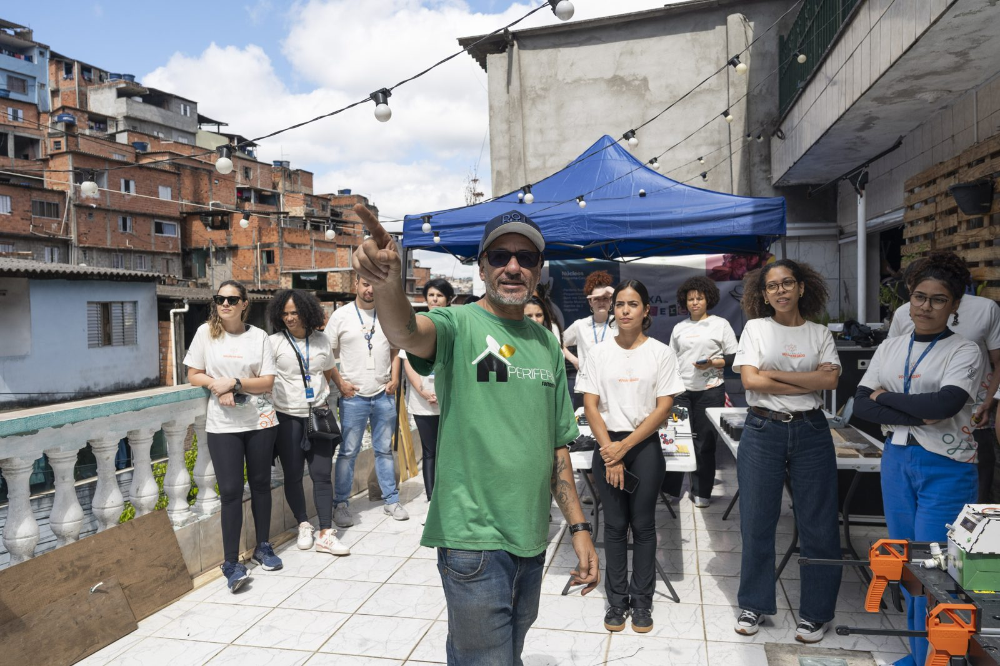
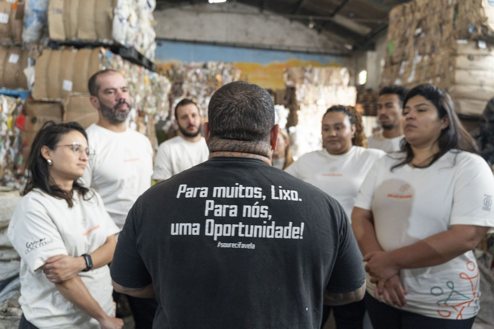
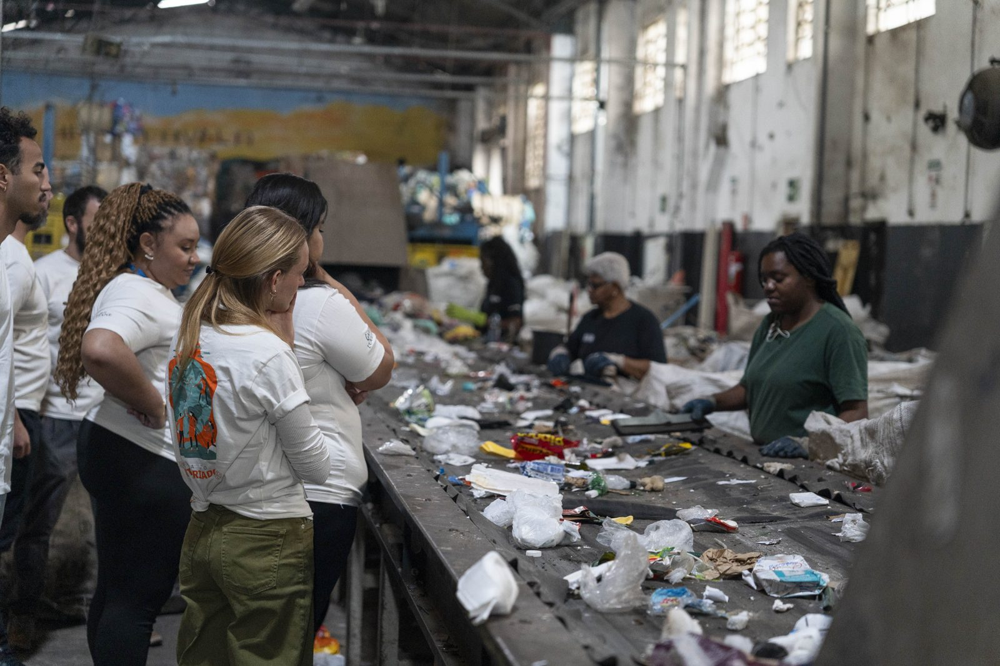
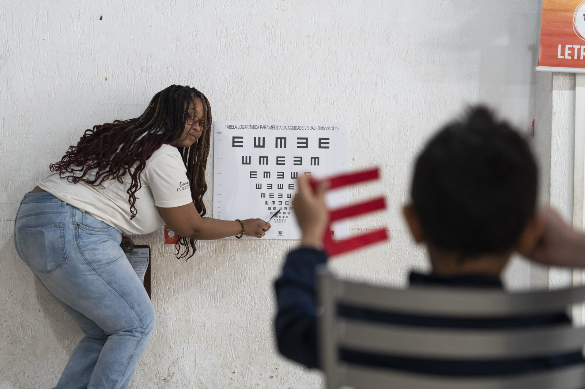
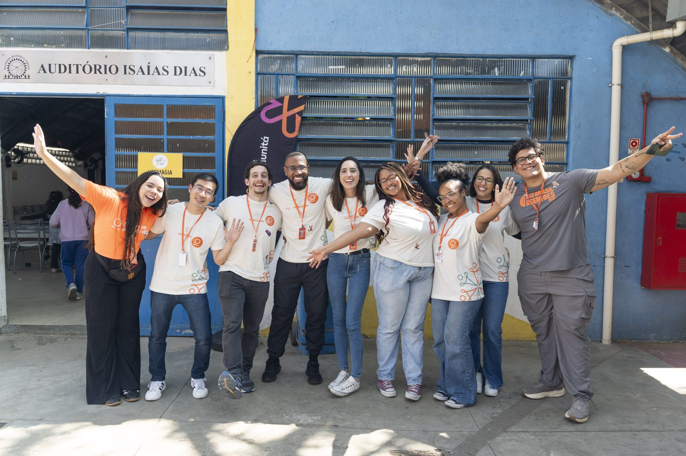

Voluntariado corporativo2023–2025
Grupo L'Occitane
Programa de voluntariado
- voluntarios
- 503
- actividades
- 23
- organizaciones apoyadas
- 19
EmPacto actúa como curadora, gestora y productora de toda la estrategia de voluntariado de la empresa, que culmina en una serie de eventos e inversiones durante la Semana de Voluntariado de L'Occitane, con la participación de cientos de colaboradores y decenas de organizaciones sociales.